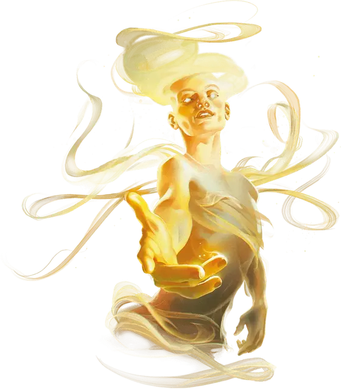

Живое знамение
Living Portent
Маленький или Средний Небожитель, законно-нейтральный

Класс Доспеха 15 (природный доспех)
Хиты 65 (10к8 + 20)
Скорость 30 футов, летая 30 футов (парит)
| мод | спас | ||
|---|---|---|---|
| СИЛ | 14 | +2 | +2 |
| ЛОВ | 16 | +3 | +5 |
| ТЕЛ | 14 | +2 | +2 |
| мод | спас | ||
|---|---|---|---|
| ИНТ | 14 | +2 | +2 |
| МДР | 16 | +3 | +5 |
| ХАР | 15 | +2 | +2 |
Навыки Восприятие +5, История +6, Магия +6, Проницательность +5
Иммунитет к урону излучение
Иммунитет к состояниям истощение
Чувства тёмное зрение 120 футов, пассивное Восприятие 15
Языки Все
Опасность 3 (700 опыта)
Бонус мастерства +2
Особенности
Сияние (только в истинной форме). Живое знамение излучает яркий свет на 30 футов и тусклый свет еще на 30 футов.
СЛУжители ЖИВЫХ ЗВёЗД. Некоторые звезды на небе - это Древнее Зло, инопланетные существа, обладающие божественной силой, из Далекого Царства, бросающего вызов реальности. Живое знамение может быть фрагментом воли этих существ. Эти живые знамения являются Аберрациями, а не Небожителями, и, как правило, они хаотично злые. Они заменяют любой урона излучением в своем блоке статистики на урон некротической или психической энергией (по выбору Мастера). Их заклинания также могут отличаться. Некоторые известные представители Древнего Зла описаны ниже:
Акамар. Мёртвая звезда, поглощающая другие звезды или звёздные тела, с которыми сталкивается.
Кайфон, Нашептывающий сны. Пурпурная звезда, чьи наставления и прислужники, кажется, помогают какое-то время, но чьё влияние неизбежно приводит к катастрофе.
Хадар, Темный Голод. Угольно-красная умирающая звезда, высасывающая жизнь из своих приспешников, чтобы предотвратить собственную гибель.
Хирад, Звезда Тайн. Бело-голубая звезда, чьи дары даруют проницательность, но также открывают ужасные истины.
Жудун, Трупная звезда. Мертвая звезда, шепчущая о силе, способная бросить вызов смерти.
Действия
Мультиатака. Знамение совершает две атаки Сияющим ударом.
Сияющий удар. . Рукопашная атака оружием: +5 к попаданию, досягаемость 5 футов или дистанция 120 футов, одно существо. Попадание: 9 (1к12 + 3) урона излучением.
Пророческое благословение. Живое знамение волшебным образом наделяет силой своего пророчества другое согласное существо, которое живое знамение может видеть в пределах 30 футов. Его максимум хитов и текущие хиты увеличиваются на 7 (1к8 + 3), и она получает кость пророчества, к8. Один раз в течение каждого своего хода, существо, когда оно проваливает проверку характеристик или спасбросок, или промахивается броском атаки, оно может бросить кость пророчества и добавить выпавшее значение к общему результату, потенциально изменяя результат. Благословение заканчивается через 1 час или когда живое знамение оканчивает благословение (никаких действий не требуется) или использует это действие снова.
Использование заклинаний. Знамение накладывает одно из следующих заклинаний, не требующее компонентов заклинания и использующее Мудрость в качестве базовой характеристики:
• 2/день: лечение ран [cure wounds];
• 1/день каждое: предсказание [divination], высшее восстановление [greater restoration]
Бонусные действия
Смена формы. Живое знамение волшебным образом превращается в гуманоида, сохраняя при этом свою игровую статистику (за исключением размера и Сияния). Трансформация заканчивается, если хиты живого знамения уменьшаются до 0 или для её завершения используется бонусное действие.
Реакции
Цена неповиновения. Когда живое знамение получает урон от существа, которое оно может видеть в пределах 120 футов, сияющая энергия опаляет существо. Существо должно совершить спасбросок Телосложения Сл 13, получая 10 (3к6) урона излучением при провале или половину этого урона при успехе.
Описание
Живые знамения - это воплощения пророчеств, посланных божествами или другими космическими силами. Эти Небожители нисходят в миры Материального плана в виде падающих звезд. Когда живые знамения ударяются о землю, они оставляют огромные кратеры, но чудесным образом никто из живущих в зоне удара не страдает. Затем эти существа из света принимают гуманоидные формы, чтобы слиться с обитателями мира.
Живые предзнаменования ищут существ, которые сыграют определенную роль в пророчествах, которым они служат, и по мере поиска, живые знамения рассказывают фрагменты пророчеств тем, с кем сталкиваются.